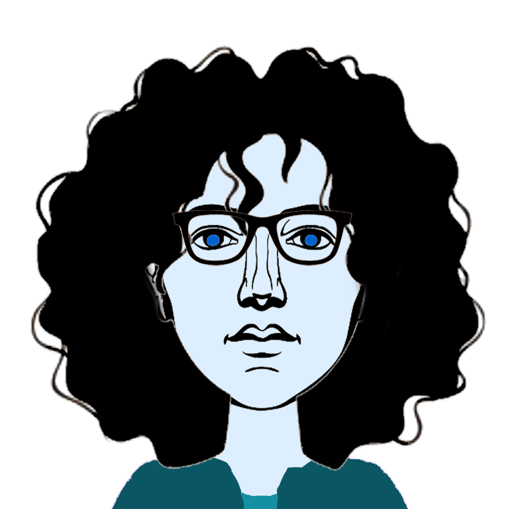

Leuk dat je meedoet met dit spelletje! Laat me allereerst 4 vrienden van me voorstellen. Onthoud hun gezichten goed. Je ziet ze hier op je scherm:

In dit spel staan ze samen op de foto met andere poppetjes. Wij krijgen allebei deze foto te zien. Alleen staan mijn 4 vrienden in mijn foto niet helemaal op dezelfde plekken als op jouw foto. Laten we samen uitzoeken welke vrienden op andere plekken staan, en welke op dezelfde. Als je hebt uitgevonden of een vriend op dezelfde of een andere plek staat, kun je op het hoofd van die vriend drukken. Er komt dan een menu tevoorschijn waar je kan drukken op 'hetzelfde' als de vriend voor ons op dezelfde plek staat, of 'anders' als de vriend voor ons op een andere plek staat. Als je een keuze hebt gemaakt, komt het hoofd van die vriend aan de rechterkant van het scherm te staan. Als we goed overleggen, vinden we samen de juiste antwoorden en is onze score hoger!
Let op: je krijgt het plaatje een paar seconden te zien. Onthoud goed wat je ziet en wie waar staat. Daarna verdwijnt het plaatje en gaan we praten over wat we hebben gezien. Als je het plaatje opnieuw wil bekijken, kun je drukken op 'Laat het plaatje zien'. Je krijgt het plaatje dan weer een paar seconden te zien. Probeer het plaatje zo min mogelijk opnieuw te bekijken, want hierdoor gaat je eindscore omlaag.
Laten we het even oefenen met een makkelijk voorbeeldje. In de volgende oefenronde komen mijn vrienden nog niet voor. Klik hieronder op 'ga door' om door te gaan naar de oefenronde.